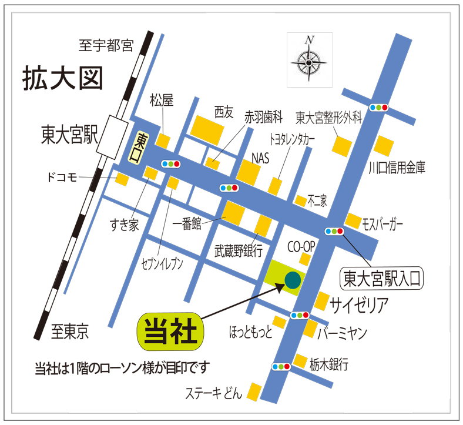

HOME ＞社長挨拶
社長挨拶
国内で四万社を超えていた貸金業登録者数は、貸金業法の改正等を原因とし、現在では二千社あまりに激減したことから、正規貸金市場から貸手が退場し、貸し手不在の貸金市場が長らく続いております。
また、この様な危機的状況にもかかわらず、預金取扱金融機関は、預金者保護の観点からリスクの高い金融取引には参加できません。
ゆえに弊社は、リスクの高い金融取引に積極的に参加し、前向きにお客様のニーズに応えてゆく所存であります。
さらに、政府に対しては貸金業法の再改正を働きかけ、時代と共に激変する経済環境の中で、お客様と共に歩み、日本経済を根底で支える企業でありたいと考えております。
全国事業者金融協会 副会長
株式会社クレイリッシュ 代表取締役社長
高木 秀男
株式会社クレイリッシュ 代表取締役社長
高木 秀男
本社アクセスマップ
〒337-0051 埼玉県さいたま市見沼区東大宮5丁目33-12柏洋ビル3階
TEL：048-682-2300
ＪＲ宇都宮線（東北本線）各駅停車に乗り、「東大宮駅」にて下車。
快速は止まりませんのでご注意下さい。
東口より徒歩5分です。
下図参照 ※ 専用駐車場がございますので、是非ご利用下さい。
TEL：048-682-2300
電車でお越しの方へ
ＪＲ宇都宮線（東北本線）各駅停車に乗り、「東大宮駅」にて下車。
快速は止まりませんのでご注意下さい。
東口より徒歩5分です。

お車でお越しの方へ
東北自動車道の「岩槻ＩＣ」より、国道16号バイパスを大宮方面へ進み「丸ヶ崎交差点」を左折して下さい 。下図参照 ※ 専用駐車場がございますので、是非ご利用下さい。